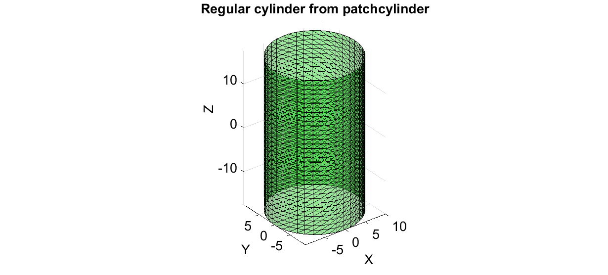
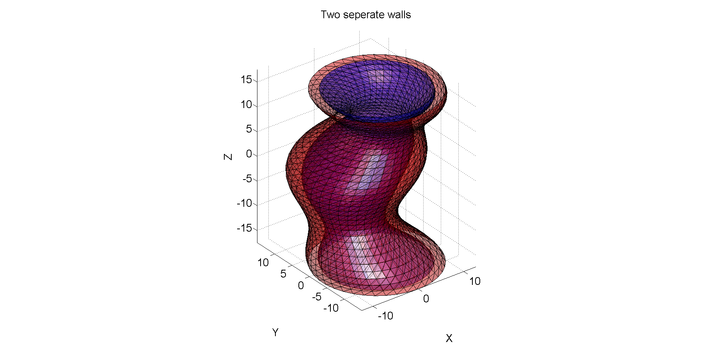

cap_patchCylinder
Below is a demonstration of the features of the cap_patchCylinder function
Contents
clear; close all; clc;
PLOT SETTINGS
fig_color='w'; fig_colordef='white'; font_size=20; cmap=gray(250); falpha=1; patch_types={'sx','sy','sz','v'}; ptype=3; no_slices=4; mark_siz1=25; mark_siz2=25; mark_siz3=15; line_width1=2; F_alpha1=0.4; F_alpha2=0.75;
BUILDING EXAMPLE MODEL
Construct regular cylinder
r=10;
nr=40;
h=35;
nz=35;
ptype='tri';
[F,V]=patchcylinder(r,nr,h,nz,ptype);
Plottting model
hf1=figuremax(fig_color,fig_colordef); title('Regular cylinder from patchcylinder','FontSize',font_size); xlabel('X','FontSize',font_size);ylabel('Y','FontSize',font_size); zlabel('Z','FontSize',font_size); hold on; hpm=patch('Faces',F,'Vertices',V,'EdgeColor','k','FaceColor','g','FaceAlpha',F_alpha1); axis equal; view(3); axis tight; grid on; camlight headlight; set(gca,'FontSize',font_size); drawnow;
Deforming regular cylinder to create outer wall
[T,R,Z]=cart2pol(V(:,1),V(:,2),V(:,3)); R_add=2.*cos(2*pi.*V(:,3).*2.*(1/(h))); R=R+R_add; [V(:,1),V(:,2),V(:,3)]=pol2cart(T,R,Z); X_add=3.*sin(2*pi.*V(:,3).*1.*(1/(h))); Y_add=3.*cos(2*pi.*V(:,3).*1.*(1/(h))); V(:,1)=V(:,1)+X_add; V(:,2)=V(:,2)+Y_add;
Creating inner wall
[T,R,Z]=cart2pol(V(:,1),V(:,2),V(:,3)); a=0.5; b=2; R_sub=b+(a+a.*cos(2*pi.*V(:,3).*3.*(1/(h)))); R2=R-R_sub; V2=V; [V2(:,1),V2(:,2),V2(:,3)]=pol2cart(T,R2,Z);
Plotting walls
hf2=figuremax(fig_color,fig_colordef); title('Two seperate walls','FontSize',font_size); xlabel('X','FontSize',font_size);ylabel('Y','FontSize',font_size); zlabel('Z','FontSize',font_size); hold on; hpm1=patch('Faces',F,'Vertices',V,'EdgeColor','k','FaceColor','r','FaceAlpha',0.5); hpm2=patch('Faces',F,'Vertices',V2,'EdgeColor','k','FaceColor','b','FaceAlpha',0.5); axis equal; view(3); axis tight; grid on; set(gca,'FontSize',font_size); camlight headlight; drawnow;
CAPPING A SET OF TWO "CYLINDRICAL" SURFACES
[Fm,Vm]=cap_patchcylinder(F,V,F,V2,nr,nz); hf3=figuremax(fig_color,fig_colordef); title('Closed (capped) vessel model','FontSize',font_size); xlabel('X','FontSize',font_size);ylabel('Y','FontSize',font_size); zlabel('Z','FontSize',font_size); hold on; hpm3=patch('Faces',Fm,'Vertices',Vm,'EdgeColor','k','FaceColor','r','FaceAlpha',1); axis equal; view(3); axis tight; grid on; set(gca,'FontSize',font_size); lighting flat; camlight('headlight'); drawnow;


GIBBON www.gibboncode.org
Kevin Mattheus Moerman, gibbon.toolbox@gmail.com